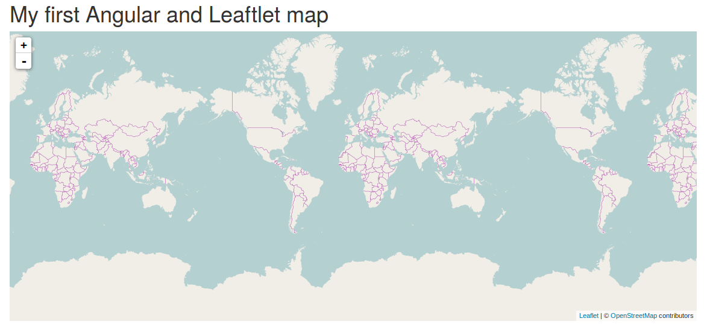
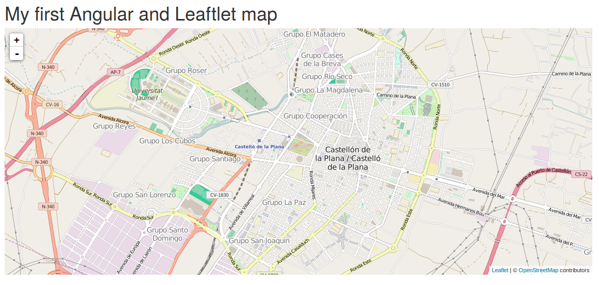
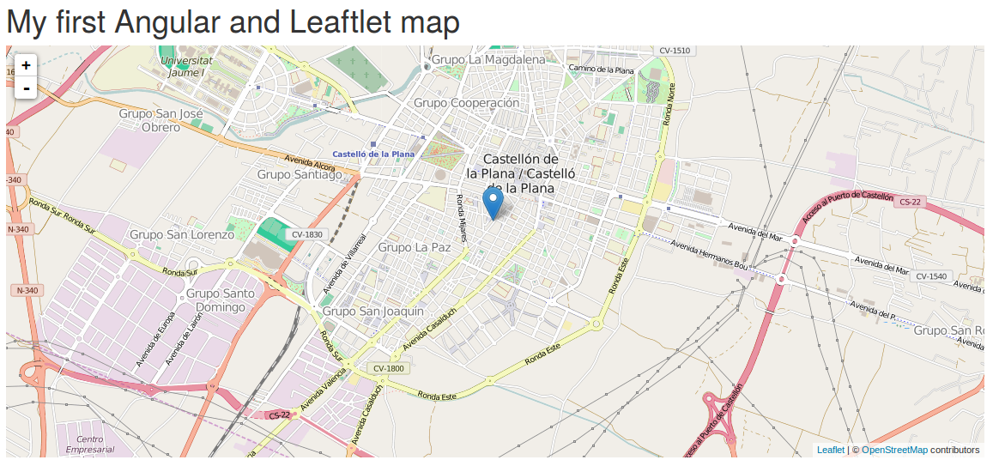
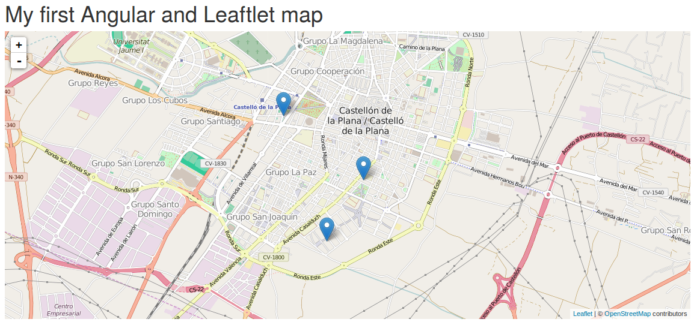
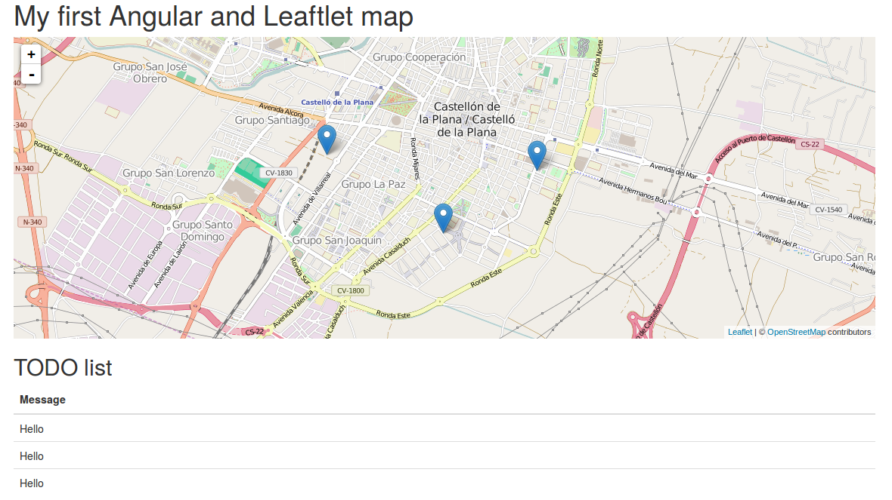
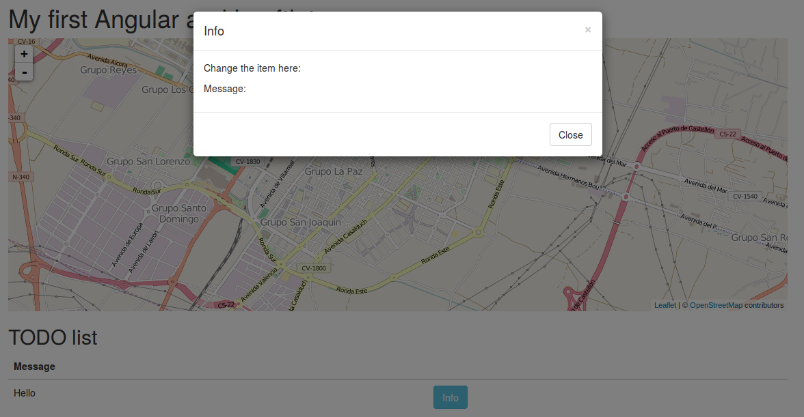
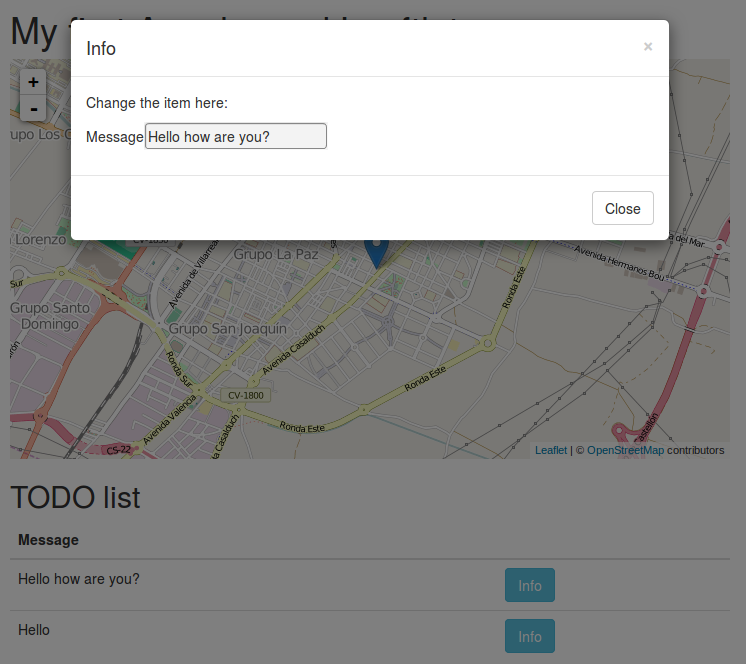
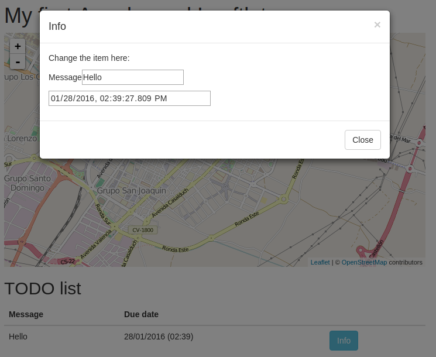
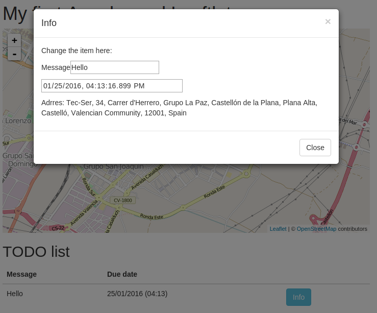

Web Development
Client Side
angular-leaflet-directive
Óscar Belmonte Fernández
Universitat Jaume I
Introduction
You already know how to use maps in a web page using leaflet(Computer Graphics and Visualization).
You now know how to design the layout of your application using Angular. The next step is to know how to connect these two worlds.
The answer is by means of angular-leaflet-directive.
Content
What are AngularJS directives?
Taken form the Angular web page:
At a high level, directives are markers on a DOM element (such as an attribute, element name, comment or CSS class) that tell AngularJS's HTML compiler ($compile) to attach a specified behavior to that DOM element (e.g. via event listeners), or even to transform the DOM element and its children.
First example
From a practical point of view, we can you angular-leaflet-directives to interact with Leaflet maps using AngularJS.
Let's crate our first example.
- Create a new bower project.
- Install the following modules:
- bootstrap.
- jquery
- angular.
- leaflet.
- angular-leaflet-directive
Remember, just type the following to install a module in your project:
npm install --save bootstrap
Let's create the index.html file and type in:
<!DOCTYPE html>
<html lang="en" ng-app="app">
<head>
<meta charset="UTF-8">
<link href="./node_modules/bootstrap/dist/css/bootstrap.css" rel="stylesheet">
<link href="./node_modules/leaflet/dist/leaflet.css" rel="stylesheet">
<script src="./node_modules/jquery/dist/jquery.js"></script>
<script src="./node_modules/bootstrap/dist/js/bootstrap.js"></script>
<script src="./node_modules/angular/angular.js"></script>
<script src="./node_modules/leaflet/dist/leaflet.js"></script>
<script src="./node_modules/angular-leaflet-directive/dist/angular-leaflet-directive.js"></script>
<script src="./js/myScripts.js"></script>
<title>My first AngularJS and Leaflet map</title>
</head>
<body ng-controller="TheController">
<div class="container">
<h1>My first Angular and Leaftlet map</h1>
<leaflet tiles="tiles" height="480px" width="100%"></leaflet>
</div>
</body>
</html>
Now, let's create the Angular controller, so create a new javascript file myScripts.js in folder named js:
var app = angular.module("app", ["leaflet-directive"]);
app.controller("TheController", ["$scope", function($scope) {
angular.extend($scope, {
tiles: {
url: "http://{s}.tile.openstreetmap.org/{z}/{x}/{y}.png",
options: {
attribution: '© OpenStreetMap contributors'
}
}
})
}]);
That's all! reload your browser to see the result.
This is the result, a fully functional leaflet map:

If you want to render a map centered at some point, change the following line in the html file :
<leaflet id="firstMap" tiles="tiles" lf-center="castellon" height="480px" width="100%"></leaflet>
And write this code inside the controller function:
app.controller("TheController", ["$scope", function($scope) {
angular.extend($scope, {
castellon: {
lat: 39.98685368305097,
lng: -0.04566192626953125,
zoom: 14
},
tiles: {
url: "http://{s}.tile.openstreetmap.org/{z}/{x}/{y}.png",
options: {
attribution: '© OpenStreetMap contributors'
}
}
})
}]);
This is the result, a map centered in Castellon city:

The GeoTODO project
Let's sum app all technologies we have seen to build a something fancy.
First, let's see how to add a marker to our map. Add a new attribute makers to the leaflet element.
<leaflet tiles="castellon" lf-center="castellon" markers="markers" height="480px" width="100%"></leaflet>
This attribute will contain the markers in our map.
Now, lets add this code to our javascript file
$scope.markers = new Array();
$scope.$on("leafletDirectiveMap.click", function (event,args) {
var latlng = args.leafletEvent.latlng;
$scope.markers = [{
lat: latlng.lat,
lng: latlng.lng,
message: "Hello"
}]
});
- We are listening to leafletDirectiveMap.click events.
- We define a function as listener.
- This function receives to parameters, the event and information about the event.
- For this event the information is the coordinates (lat, lng).
This is the result:

Let's extend our application to maintain multiple markers. Chage the javascript code to:
$scope.$on("leafletDirectiveMap.click", function (event,args) {
var latlng = args.leafletEvent.latlng;
$scope.markers.push({
lat: latlng.lat,
lng: latlng.lng,
message: "Hello"
});
});
Now, we are pushing any new marker into the array.
This is the result:

If you need more control about the mouse button pressed:
$scope.$on("leafletDirectiveMap.mousedown", function (event,args) {
var mouseButton = args.leafletEvent.originalEvent.button;
if(mouseButton == 2) { // Right button
var latlng = args.leafletEvent.latlng;
$scope.markers.push({
lat: latlng.lat,
lng: latlng.lng,
message: "Hello"
});
}
});
Now, left button performs the usual actions, and we use the right button to add a new marker to the map.
It would be nice if we could see a list of our todo items, let's add a table under the map:
<div class="container">
<div class="row">
<div class="col-md-12">
<h2>TODO list</h2>
<table class="table">
<thead>
<tr><th>Message</th></tr>
</thead>
<tbody>
<tr>
<td></td>
</tr>
</tbody>
</table>
</div>
</div>
</div>
Let's link the presentation with the data in our model using the controller:
<body ng-controller="TheController as theController">
For each row in the table, we show its message field:
<table class="table">
<thead>
<tr><th>Message</th></tr>
</thead>
<tbody>
<tr ng-repeat="marker in markers">
<td>{{marker.message}}</td>
</tr>
</tbody>
</table>
The ng-repeat AngularJS directive, iterates over the elements of an array.
This is the result:

Let's add a modal window to change the message for each todo item. First, let's add a new Info button for each todo item
<table class="table">
<thead>
<tr><th>Message</th><th></th></tr>
</thead>
<tbody>
<tr ng-repeat="marker in markers">
<td>{{marker.message}}</td>
<td><button class="btn btn-info" ng-click="showInfo($index)" data-toggle="modal" data-target="#myModal">Info</button> </td>
</tr>
</tbody>
</table>
And the code for the modal window:
<div class="modal fade" id="myModal" tabindex="-1" role="dialog" aria-labelledby="myModalLabel">
<div class="modal-dialog" role="document">
<div class="modal-content">
<div class="modal-header">
<button type="button" class="close" data-dismiss="modal" aria-label="Close"><span aria-hidden="true">×</span></button>
<h4 class="modal-title" id="myModalLabel">Info</h4>
</div>
<div class="modal-body">
<p>Change the item here:</p>
<p>Message: </p>
</div>
<div class="modal-footer">
<button type="button" class="btn btn-default" data-dismiss="modal">Close</button>
</div>
</div>
</div>
</div>
This is the result:

The next step is to link the wiew with the data in the model by means of the controller. We need to know which button was pressed:
<td><button class="btn btn-info" ng-click="showInfo($index)" data-toggle="modal" data-target="#myModal">Info</button> </td>
And in the javascript file:
$scope.currentMarker = {};
$scope.showInfo = function(index) {
$scope.currentMarker = $scope.markers[index];
}
We are storing in the $scope.currentMarker model, the item selected in the list. Anytime we press a button, this model is updated.
Finally, let's update the body of the modal window:
<div class="modal-body">
<p>Change the item here:</p>
<p>Message:<input type="text" ng-model="currentMarker.message"></p>
</div>

Let's add a new column for the due data of each item:
<table class="table">
<thead>
<tr><th>Message</th><th>Due date</th><th></th></tr>
</thead>
<tbody>
<tr ng-repeat="marker in markers">
<td>{{marker.message}}</td>
<td>{{marker.dueDate | date: "dd/MM/yyyy (hh:mm)"}}</td>
<td><button class="btn btn-info" ng-click="showInfo($index)" data-toggle="modal" data-target="#myModal">Info</button> </td>
</tr>
</tbody>
</table>
Note:
- The filter | date: "dd/MM/yyyy (hh:mm) to format the date.
- We have added a new column.
Next, add a new field to our javascript objects:
$scope.markers.push({
lat: latlng.lat,
lng: latlng.lng,
message: "Hello",
dueDate: new Date()
});
Finally, link it in the modal window:
<p><input type="datetime-local" ng-model="currentMarker.dueDate"></p>
Note: type="datetime-local" only works with Google Chrome.
This is the result:

Let's try something new. It would be fancy if we can get the postal address of each location.
The Nominatim OpenStreetMap provides a free service for reverse geocoding: it returns the postal address given its geographic coordinates.
How do we request a service using the http protocol in AngularJS?
AngularJS can inject a new reference for doing that $http.
app.controller("TheController", [ "$scope", "$http", function($scope, $http) {
Let's re-write our code:
$scope.$on("leafletDirectiveMap.mousedown", function (event,args) {
var mouseButton = args.leafletEvent.originalEvent.button;
if(mouseButton == 2) { // Right button
latlng = args.leafletEvent.latlng;
reverseGeocoding(latlng);
}
});
function reverseGeocoding(latlng) {
var urlString = "http://nominatim.openstreetmap.org/reverse?format=json&lat=" +
latlng.lat + "&lon=" +
latlng.lng + "&zoom=18&addressdetails=1";
$http.get(urlString).then(addMarker);
}
function addMarker(response) {
$scope.markers.push({
lat: latlng.lat,
lng: latlng.lng,
message: "Hello",
dueDate: new Date()
});
}
The reverseGeocoding(latlng) function is the key point.
Finally, let's update the modal window:
<div class="modal-body">
<p>Change the item here:</p>
<p>Message<input type="text" ng-model="currentMarker.message"></p>
<p><input type="datetime-local" ng-model="currentMarker.dueDate"></p>
<p>Adrres: {{currentMarker.postalAddress}}</p>
</div>

Summary
In this chapter you have seen how to use Leaflet using AngullarJS by means for angular-leaflet-directive.
Now, you can control your maps and its content using AngularJS.
Exercises
- Add a show button like in the image (Tip: use the focus attribute).
- Add a new remove button to any item in the Geo-TODO application.